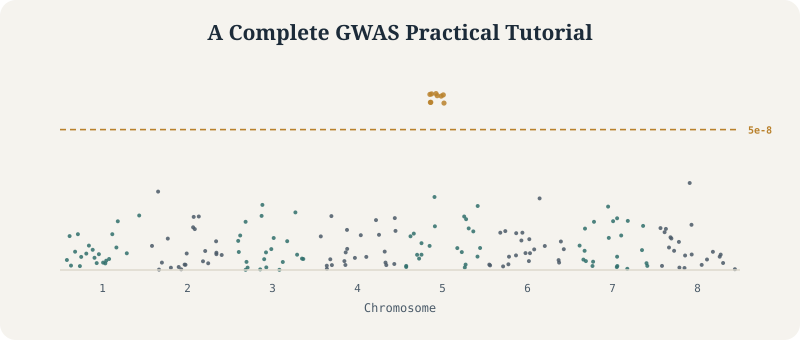
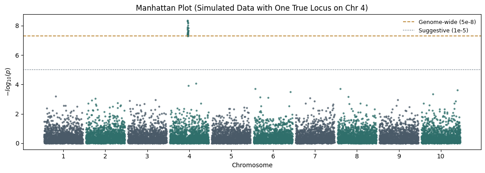

A Complete GWAS Practical Tutorial Using PLINK, GCTA, R, and METAL
From Genotype QC to Association Testing and Meta-analysis
Genetics
GWAS
Statistical Genetics
Tutorial
A full walkthrough of a GWAS pipeline – QC, PCA, mixed-model association testing, meta-analysis, and relatedness – with runnable simulations illustrating each key statistical concept.
Author
Nivedita Bhadra
Published
June 8, 2026

A Manhattan plot: each point is a SNP, plotted by genomic position (x-axis) and significance (y-axis). Towers that cross the genome-wide threshold are the signals a GWAS is built to find.
PLINKGCTAMETALRPopulation Genetics
A note on how to use this tutorial. PLINK, GCTA, and METAL are external command-line tools – install them separately and run the shown commands against your own genotype files. They are not part of this notebook’s Python kernel and are not executed here. To make the core statistical concepts concrete without requiring real genotype data, several sections include small, genuinely executed Python simulations (clearly marked) that reproduce the shape of the real output – a heterozygosity distribution, a stratified PCA plot, QQ plot patterns, a Manhattan plot, and a GRM heatmap – using synthetic data, not results from the commands above.
Genome-wide association studies, or GWAS, are used to identify genetic variants associated with traits or diseases.
A GWAS usually tests hundreds of thousands to millions of SNPs across the genome.
For each SNP, we ask:
Is genetic variation at this SNP statistically associated with the phenotype?
In this tutorial, we walk through a complete GWAS workflow using:
PLINK for genotype quality control
PCA for population structure
GCTA fastGWA for mixed-model association testing
R for QQ plots and Manhattan plots
METAL for meta-analysis
GRM inspection for relatedness checks
The goal is not only to run commands, but to understand why each step matters.
0.0.1 What You Will Learn
How to prepare genotype and phenotype files for GWAS
How to perform sample and SNP quality control with PLINK
How to compute principal components and build a GRM
How to run mixed-model GWAS with GCTA fastGWA
How to visualize results with QQ and Manhattan plots
How to perform a simple meta-analysis with METAL
How to inspect relatedness and heterozygosity in GWAS data
0.0.2 Who Should Read This Tutorial
This tutorial is intended for researchers and students who want a practical GWAS workflow using standard tools in statistical genetics. Prior experience with command-line tools, PLINK, and basic genomics concepts is helpful but not required.
0.0.3 Overview of the GWAS Pipeline
The complete workflow is:
Prepare genotype and phenotype files
Perform genotype quality control
Remove low-quality SNPs
Remove low-quality individuals
Check heterozygosity outliers
Compute principal components
Build a genetic relationship matrix
Run GWAS without PC adjustment
Run GWAS with PC adjustment
Compare QQ plots and Manhattan plots
Meta-analyze two GWAS results
Inspect heterogeneity
Identify the top SNP
Inspect relatedness using the GRM
0.0.4 Why Quality Control is Necessary?
Before running GWAS, we must clean the genotype data.
Poor genotype quality can create false associations.
Common problems include:
SNPs missing in many individuals
Individuals missing many genotypes
Very rare variants with unstable estimates
SNPs violating Hardy-Weinberg equilibrium
Sample contamination
Inbreeding
Unexpected relatives
Population stratification
A GWAS is only as reliable as the data used to run it.
The .fam file contains individual-level information:
FID IID father_ID mother_ID sex phenotype
The .bed file stores the actual genotype matrix in compressed binary format.
0.0.7 Create Working Directory
mkdir GWAScd GWAS# Place your own study1.{bed,bim,fam}, study2.{bed,bim,fam},# phenotype (study1_pheno.txt, study2_pheno.txt), and# covariate (study1_covariates.txt, study2_covariates.txt) files here.
Check files:
ls
Inspect the genotype files:
head study1.famhead study1.bim
Inspect phenotype and covariate files:
head study1_pheno.txthead study1_covariates.txt
0.0.8 Question: Is the Phenotype Quantitative or Case-Control?
Look at the phenotype file:
head study1_pheno.txt
If the phenotype is continuous, such as height, BMI, or simulated trait value, then it is quantitative.
If the phenotype is coded as 0/1 or 1/2 for disease status, then it is case-control.
In this practical, the phenotype is treated as a quantitative phenotype because fastGWA is run using a linear mixed model.
0.0.8.1 Software Used
We use:
Tool
Purpose
PLINK 1.9
QC and genotype processing
GCTA
GRM construction and fastGWA
R
Plotting and file preparation
qqman
QQ plots and Manhattan plots
METAL
Meta-analysis
1 Part 1: Quality Control in PLINK
Quality control is one of the most important parts of GWAS.
The order matters.
We usually clean SNPs first and individuals second.
Why?
If many SNPs are poor quality, individuals may appear to have high missingness just because those SNPs failed. So we first remove bad SNPs, then evaluate individual-level quality.
1.0.1 Step 1.1: Get an Overview of the Data
Run:
plink--bfile study1 --freq--out study1_freqs
This command:
reads study1.bed, study1.bim, and study1.fam
reports number of individuals
reports number of SNPs
computes allele frequencies
Output files:
study1_freqs.frqstudy1_freqs.log
Inspect:
head study1_freqs.frq
The .frq file contains allele frequency information.
cat("Lambda (No PCs):",lambda(qq_noPCs$P),"\n")cat("Lambda (With PCs):",lambda(qq_withPCs$P),"\n")
74 Interpreting Lambda
λ
Interpretation
1.00
Ideal
1.02
Very good
1.05
Usually acceptable
>1.10
Investigate inflation
>1.20
Likely problematic
75 Important Caveat
Many beginners think:
λ > 1
means
bad GWAS
This is not always true.
Large studies often have:
thousands of real associations
highly polygenic traits
True signal can also increase λ.
Therefore:
QQ plots should always be interpreted together with λ.
76 Manhattan Plots
QQ plots summarize the whole GWAS.
Manhattan plots show where signals occur.
Each SNP is plotted according to:
genomic position
significance
77 Why the Name “Manhattan”?
Significant loci appear as towers.
These resemble skyscrapers in Manhattan.
# Illustrative simulation -- NOT real fastGWA output.# Simulates genome-wide p-values across 10 chromosomes with one true locus,# to show what a real association "tower" looks like against the null background.import numpy as npimport matplotlib.pyplot as pltrng = np.random.default_rng(7)n_chr, snps_per_chr =10, 1500true_chr, true_pos_center =4, 700chrom, pos, pval = [], [], []cum_offset =0chrom_offsets = []for c inrange(1, n_chr +1): p = np.sort(rng.integers(1, 250_000_000, snps_per_chr)) pv = rng.uniform(0, 1, snps_per_chr)if c == true_chr: window =slice(max(0, true_pos_center -15), true_pos_center +15) pv[window] = rng.uniform(1e-10, 5e-8, len(pv[window])) chrom.extend([c] * snps_per_chr) pos.extend(p + cum_offset) pval.extend(pv) chrom_offsets.append(cum_offset + p.max() /2) cum_offset += p.max() +20_000_000chrom, pos, pval = np.array(chrom), np.array(pos), np.array(pval)neglog_p =-np.log10(pval)fig, ax = plt.subplots(figsize=(11, 4))colors_cycle = ["#2f6f6b", "#4a5a68"]for c inrange(1, n_chr +1): mask = chrom == c ax.scatter(pos[mask], neglog_p[mask], s=5, color=colors_cycle[c %2], alpha=0.7)ax.axhline(-np.log10(5e-8), color="#b9812c", linestyle="--", linewidth=1.3, label="Genome-wide (5e-8)")ax.axhline(-np.log10(1e-5), color="#4a5a68", linestyle=":", linewidth=1.1, label="Suggestive (1e-5)")ax.set_xticks(chrom_offsets)ax.set_xticklabels(range(1, n_chr +1))ax.set_xlabel("Chromosome")ax.set_ylabel("$-log_{10}(p)$")ax.set_title(f"Manhattan Plot (Simulated Data with One True Locus on Chr {true_chr})")ax.legend(frameon=False, fontsize=9)plt.tight_layout()plt.show()

78 Constructing Manhattan Plots
The x-axis:
Chromosomal position
The y-axis:
\[
-\log_{10}(p)
\]
Small p-values become tall peaks.
79 Plotting Results
par(mfrow=c(2,1))manhattan( qq_noPCs,main="No PC Adjustment",suggestiveline=-log10(1e-5),genomewideline=-log10(5e-8))manhattan( qq_withPCs,main="With PC Adjustment",suggestiveline=-log10(1e-5),genomewideline=-log10(5e-8))
80 Understanding the Threshold Lines
The blue line:
\[
10^{-5}
\]
is the suggestive threshold.
The red line:
\[
5\times10^{-8}
\]
is the genome-wide significance threshold.
81 Why 5×10⁻⁸?
Historically:
Approximately one million independent tests occur in a European GWAS.
Using Bonferroni correction:
\[
0.05
/
10^6
=
5\times10^{-8}
\]
This became the standard threshold.
82 What Does a True Signal Look Like?
A true causal locus rarely appears as a single SNP.
Instead:
Many nearby SNPs become significant
because of linkage disequilibrium.
Result:
Tower
rather than:
Single isolated point
83 Example
Good signal:
*
***
*****
*******
Suspicious signal:
*
A single isolated SNP often indicates:
genotyping error
poor imputation
technical artifact
84 Comparing No-PC and PC-Adjusted Results
Ask:
Do significant loci remain?
Do some peaks disappear?
Does inflation decrease?
Possible outcome:
No PCs:
Many peaks
With PCs:
Fewer peaks
Interpretation:
Many initial hits were likely due to stratification.
Studies with smaller standard errors receive larger weights.
90.0.3.3 Why Larger Studies Get More Weight
Large studies generally have:
smaller standard errors
more precise estimates
Therefore:
\[
SE \downarrow
\Rightarrow
Weight \uparrow
\]
This is exactly what we want.
More reliable studies contribute more strongly.
90.0.4 What Does METAL Do?
METAL is one of the most widely used GWAS meta-analysis programs.
Input:
Summary statistics
Output:
Combined summary statistics
METAL does not require:
genotype data
phenotype data
individual-level covariates
Only GWAS summary statistics are needed.
90.0.4.1 Preparing GWAS Results
We previously generated:
study1_withPCs.fastGWA
study2_withPCs.fastGWA
These files contain:
SNP
chromosome
position
beta
standard error
p-value
90.0.4.2 Inspecting Results
head study1_withPCs.fastGWAhead study2_withPCs.fastGWA
90.0.4.3 Required Columns
METAL typically requires:
Column
Meaning
SNP
Variant identifier
A1
Effect allele
A2
Other allele
BETA
Effect size
SE
Standard error
P
P-value
90.0.4.4 Harmonization
Before meta-analysis:
effect alleles must match.
For example:
Study 1:
A = effect allele
G = reference allele
Study 2:
G = effect allele
A = reference allele
If not corrected:
effect estimates will point in opposite directions.
This can completely invalidate results.
90.0.4.5 Example
Study 1:
\[
\beta = +0.15
\]
Study 2:
\[
\beta = -0.15
\]
The apparent disagreement may be entirely due to allele coding.
Always harmonize alleles.
90.0.4.6 Creating a METAL Script
Create:
metal_script.txt
91 Contents
SCHEME STDERR
MARKER SNP
ALLELE A1 A2
EFFECT BETA
STDERR SE
PVAL P
PROCESS study1_withPCs.fastGWA
PROCESS study2_withPCs.fastGWA
OUTFILE meta_results .
ANALYZE
QUIT
Raw Genotypes
↓
Quality Control
↓
LD Pruning
↓
PCA
↓
GRM Construction
↓
Mixed Model GWAS
↓
QQ Plot
↓
Manhattan Plot
↓
Meta-analysis
↓
Relatedness Inspection
↓
Biological Interpretation
A GWAS is much more than running a regression for millions of SNPs.
Every stage exists for a reason:
QC prevents technical artifacts.
PCA controls ancestry differences.
GRMs model genetic similarity.
Mixed models account for relatedness.
QQ plots diagnose inflation.
Manhattan plots reveal genomic loci.
Meta-analysis increases power.
When all of these pieces work together, GWAS becomes one of the most powerful tools in modern human genetics, enabling the discovery of thousands of genetic variants associated with disease, behavior, physiology, and molecular traits.